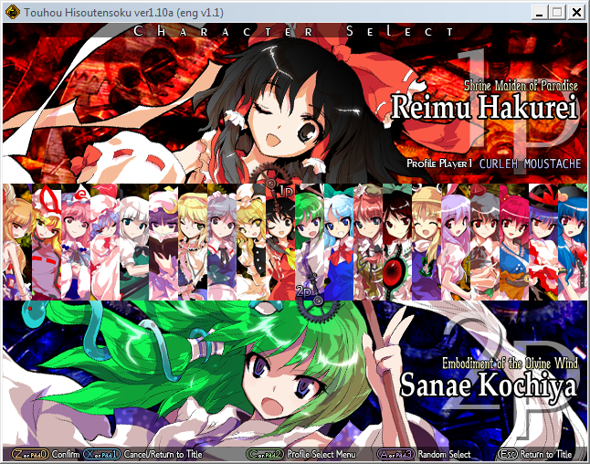
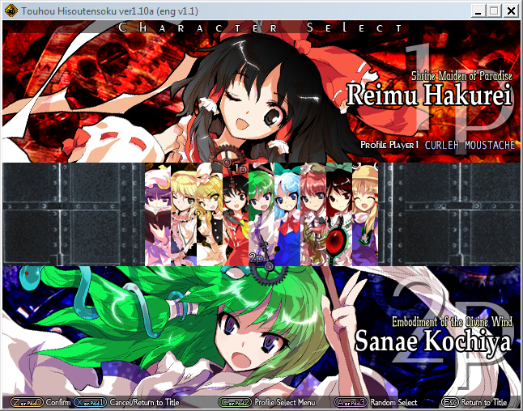

Normais (G) - A
O que é Hisoutensoku?
Touhou 12.3 - Hisoutensoku é um spin-off da linha normal de Touhou. O jogo acontence entre os eventos de Touhou 12 - UFO & Touhou 13 - TD.
Hisoutensoku é o último jogo da trilogia de luta original de Touhou, sendo diretamente uma melhoria do jogo Touhou 10.5 - Scarlet Weather Rhapsody. O jogo em si é no mesmo estilo, mas teve melhorias de sistema, novos personagens e um modo história completamente novo.
Sendo um derivado de um jogo no estilo Bullet Hell, Hisountensoku combina elementos de jogos de luta de anime e de bullet hells, criado um jogo super divertido que nunca foi visto antes.
Neste guia explicarei como instalar Hisoutensoku, seus controles e ataques básicos, e seu sistema de cartas.
Isso significa que dois elementos extremamente importantes do jogo ficaram fora: o sistema de clima & sistema de combos.
Instalação
Aqui vamos ver como instalar Hisoutensoku em seu computador completamente.
Primeiramente, você deve acessar a Wiki de Hisoutensoku, ela contem um mini guia de download e setup de Hisou, mas em inglês. Também mostra algumas dicas para quando for jogar com outras pessoas.
Ao acessar o site, garanta que você tenha baixado os arquivos: O jogo Th12.3 - seu antecessor, Scarlet Weather Rhapsody - a tradução para inglês & um arquivo que lhe dá todas as cartas do jogo.
Depois de obtê-los, extraia eles para algum local do seu computador. Se necessário, deixe 10.5 e 12.3 em locais separados.
Por que baixar o antecessor?
Para ter todos os personagens (como a foto ao lado mostra), você deve colocar no arquivo configex123.ini o diretório de 10.5, como a wiki demonstra na parte de instalação.
Sem linkear os dois jogos, o seu menu de personagens ficará menor, como o da esquerda.
Gameplay básico
Ao entrar no jogo...
Ao entrar no jogo, note que seus controles de menu são fixos como as setas do teclado e os botões Z, X e C.
Vá no menu de configurações (settings) para definir volume, tamanho da tela e qualidade. Para mudar o seu deck de cartas e seus controles, clique em "Profile", e faça um perfil novo.
Depois de fazer um perfil novo, mudar seus controles e montar um deck (opcional), vamos partir direto para o modo treino.
LEMBRE-SE de ao entrar no modo treino, clicar no botão C para definir o 1P como o seu perfil.
Elementos básicos
Soku funciona como qualquer jogo de luta em estilo anime normal, tem 4 botões denominados como A, B, C e D.
Cada botão tem seu uso, sendo eles movimentos diferentes. os tais são:
Normais (A) - A
Bullets Fracas - B
Bullets Fortes - C
Correr/Voar - D
Como todo jogo de luta, temos comandos especiais, eles são mostrados no perfil, quando você troca as Skill Cards.
A wiki de Hisouten possui detalhes mais profundos de todos os ataques dos personagens, mostrando informações que você pode desfrutar muito bem de. Aqui está a página com o indice de todos os personagens.
Neste jogo, todos os botões são diferentes no chão e ar, mas os que sofrem mudanças drásticas são os normais. Todas os botões de bullets podem possuir um especial que você pode carregar ao segurar o botão, para lançar mais projéteis, sendo mais fortes.
Os botão D é um atalho para correr no chão, mas no ar ele lhe permite voar. Vários personagens tem estilos de voõ diferentes, então veja os que você mais goste.
Se você fizer contato com um projétil enquanto corre, você irá atravessar pelo projétil sem levar qualquer dano. Isso é chamado de graze. Grazing é um elemento importante do jogo, pois estende suas defesas e pode diminuir o espaço entre você e o oponente.
Deste jeito.
Cartas e Energia
No hud da parte debaixo, temos dois HUDs, um com hexágonos azuis e outro com 5 cartas aparecendo, aqui vamos explica-las.
Energia
Os hexágonos azuis são denominados de energia, eles deixam você lançar seus projéteis, e voar no ar. Se estiverem vazios, você não podera realizar estas ações.
Para saber mais profundamente deste sistema, siga este link.
Cartas
Um dos elementos base de Hisoutensoku são as cartas. As cartas podem funcionar de três jeitos diferentes:
Itens
Skill Cards - Specials
Spell Cards - Supers
Os dois ultimos botões que você definiu nas suas configurações são os botões que controlam as cartas. Switch Card (A+B) troca a primeira carta, sendo a que você pode usar; enquanto Use Card (B+C) usa a primeira carta que aparece, contanto que esteja circulada por um quadrado branco e amarelo.
Os itens e skill cards são todas cartas de 1 cost, o que significa que não gastarão outras cartas que vem depois delas, enquanto spell cards custaram 1 a 5 cartas, o que torna seu poder não só maior, mas gasta as cartas depois dela.
Trocar a posição de cartas é importante enquanto joga, pois pode ser que apareça duas cartas que queira usar, então mudar suas posições pode garantir que elas acabem sobrando ao usar um spell.
Itens são cartas fixas para todos os personagens, com suas habilidades escritas no seletor de cartas, enquanto isso, Skill e Spell cards são todas dependentes de personagens.
Um deck pode ter ao máximo 20 cartas, sendo que você pode ter até 4 repetidas de 1 ataque.
Para mais detalhes sobre este sistema, veja a página em sistema de cartas e itens do sistema.